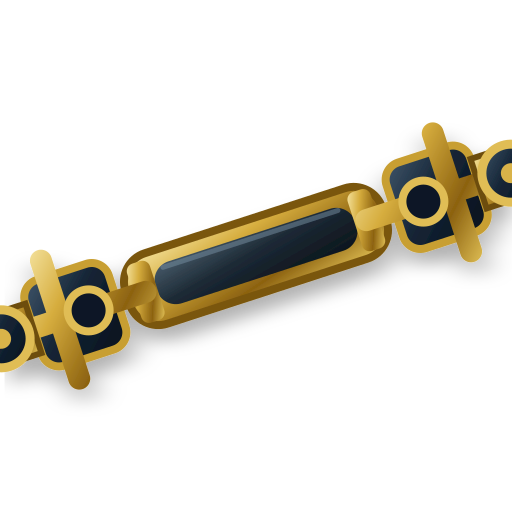

<section class="industrial-stats">
  <div class="industrial-stats__container">

    <!-- CARD 1 -->
    <article class="industrial-stat">
      

      <h3 class="industrial-stat__number">
        +20 AÑOS
      </h3>

      <p class="industrial-stat__description">
        De experiencia en el sector
      </p>
    </article>

    <!-- CARD 2 -->
    <article class="industrial-stat">
      

      <h3 class="industrial-stat__number">
        +3,000
      </h3>

      <p class="industrial-stat__description industrial-stat__description--strong">
        Cardanes reparados
      </p>
    </article>

    <!-- CARD 3 -->
    <article class="industrial-stat">
      

      <h3 class="industrial-stat__title">
        Técnicos Profesionales<br />
        Capacitados
      </h3>
    </article>

  </div>

  <style>
    .industrial-stats {
      position: relative;
      width: 100%;
      padding: 32px 28px 48px;

      background-color: #10182d;

      /*
        Si tienes una textura azul, úsala aquí.
        Esta sería la opción ideal para acercarnos 1:1
        a la imagen original:

        background-image:
          linear-gradient(
            rgba(8, 13, 28, 0.2),
            rgba(8, 13, 28, 0.2)
          ),
          url('./navy-texture.jpg');
      */

      /*
        Mientras no tengas textura usamos esto
        para simular las variaciones del fondo.
      */
      background-image:
        radial-gradient(
          circle at 18% 35%,
          rgba(52, 67, 110, 0.22),
          transparent 34%
        ),
        radial-gradient(
          circle at 82% 70%,
          rgba(43, 55, 91, 0.18),
          transparent 38%
        ),
        linear-gradient(
          135deg,
          #0b1123 0%,
          #17213c 48%,
          #0d1428 100%
        );

      font-family: Arial, Helvetica, sans-serif;

      box-sizing: border-box;

      border-top: 2px solid rgba(192, 153, 68, 0.6);
      border-bottom: 2px solid rgba(192, 153, 68, 0.6);

      box-shadow:
        inset 0 1px 0 rgba(247, 216, 137, 0.14),
        inset 0 -1px 0 rgba(247, 216, 137, 0.12);
    }

    /*
      Segunda línea dorada muy suave,
      como la referencia.
    */
    .industrial-stats::before,
    .industrial-stats::after {
      content: "";
      position: absolute;
      left: 0;
      width: 100%;
      height: 1px;

      background: linear-gradient(
        90deg,
        transparent 0%,
        rgba(207, 168, 80, 0.35) 12%,
        rgba(224, 185, 93, 0.75) 50%,
        rgba(207, 168, 80, 0.35) 88%,
        transparent 100%
      );
    }

    .industrial-stats::before {
      top: 5px;
    }

    .industrial-stats::after {
      bottom: 5px;
    }

    .industrial-stats__container {
      width: 100%;
      max-width: 1050px;

      margin: 0 auto;

      display: grid;
      grid-template-columns: repeat(3, 1fr);
      gap: 20px;
    }

    .industrial-stat {
      position: relative;

      min-height: 198px;

      padding: 14px 20px 20px;

      display: flex;
      flex-direction: column;
      align-items: center;
      justify-content: flex-start;

      text-align: center;

      /*
        OJO: la tarjeta NO es clara.
        Es prácticamente el mismo navy del fondo.
      */
      background:
        linear-gradient(
          145deg,
          rgba(25, 36, 66, 0.52),
          rgba(10, 16, 34, 0.56)
        );

      border: 1px solid rgba(158, 158, 151, 0.44);

      box-shadow:
        inset 0 0 0 1px rgba(255, 255, 255, 0.035),
        0 4px 10px rgba(0, 0, 0, 0.3);

      box-sizing: border-box;
    }

    /*
      Highlight muy leve en el borde superior
      de cada tarjeta.
    */
    .industrial-stat::before {
      content: "";
      position: absolute;

      top: 0;
      left: 8%;

      width: 84%;
      height: 1px;

      background: linear-gradient(
        90deg,
        transparent,
        rgba(211, 178, 102, 0.3),
        transparent
      );
    }

    /*
      Pequeño reflejo dorado inferior.
      Está presente en la referencia,
      sobre todo en la card central.
    */
    .industrial-stat::after {
      content: "";
      position: absolute;

      bottom: -1px;
      left: 50%;

      width: 44%;
      height: 2px;

      transform: translateX(-50%);

      background: linear-gradient(
        90deg,
        transparent,
        rgba(222, 181, 87, 0.7),
        transparent
      );

      opacity: 0.65;
    }

    /* =========================
       ICONS
       ========================= */

    .industrial-stat__icon {
      display: block;

      width: 88px;
      height: 82px;

      margin: 0 0 3px;

      object-fit: contain;

      filter:
        drop-shadow(0 3px 2px rgba(0, 0, 0, 0.55))
        drop-shadow(0 0 2px rgba(215, 170, 65, 0.2));
    }

    .industrial-stat__icon--experience {
      width: 90px;
    }

    .industrial-stat__icon--driveshaft {
      width: 150px;
      height: 80px;
    }

    .industrial-stat__icon--technician {
      width: 76px;
      height: 88px;

      margin-bottom: 4px;
    }

    /* =========================
       GOLD NUMBERS
       ========================= */

    .industrial-stat__number {
      margin: 1px 0 7px;

      color: #e6c276;

      font-size: 37px;
      line-height: 1;

      font-weight: 700;

      letter-spacing: -0.7px;

      text-shadow:
        0 2px 2px rgba(0, 0, 0, 0.95),
        0 0 4px rgba(216, 174, 84, 0.2);
    }

    /* =========================
       TEXT
       ========================= */

    .industrial-stat__description {
      margin: 0;

      color: #f3efe7;

      font-size: 17px;
      line-height: 1.25;

      font-weight: 400;

      text-shadow:
        0 2px 2px rgba(0, 0, 0, 0.95);
    }

    .industrial-stat__description--strong {
      font-size: 19px;
      font-weight: 700;
    }

    .industrial-stat__title {
      margin: 2px 0 0;

      color: #f3efe7;

      font-size: 20px;
      line-height: 1.08;

      font-weight: 700;

      text-shadow:
        0 2px 2px rgba(0, 0, 0, 0.95);
    }

    /* =========================
       TABLET
       ========================= */

    @media (max-width: 850px) {
      .industrial-stats__container {
        grid-template-columns: 1fr;
        max-width: 430px;
      }

      .industrial-stat {
        min-height: 205px;
      }
    }

    /* =========================
       MOBILE
       ========================= */

    @media (max-width: 480px) {
      .industrial-stats {
        padding: 28px 18px 38px;
      }

      .industrial-stat {
        padding: 15px 18px 22px;
      }

      .industrial-stat__number {
        font-size: 34px;
      }

      .industrial-stat__title {
        font-size: 19px;
      }
    }
  </style>
</section>
